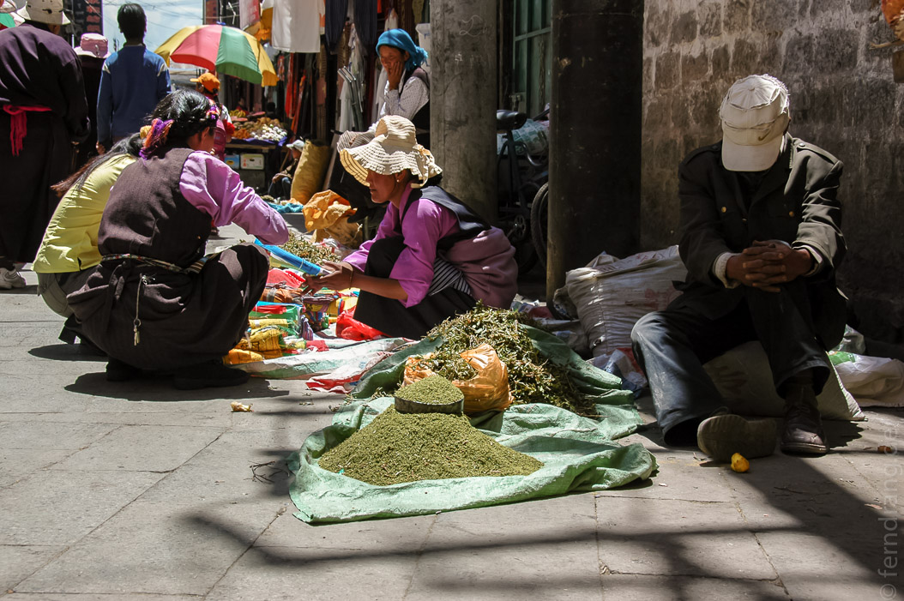

Unseren freien Tag haben wir in der tibetischen Altstadt von Lhasa verbracht. Da wir uns ständig in den kleinen, verwinkelten Gassen verlaufen haben, sind wir auch ständig wieder beim Jokhang in der Mitte des Gewirrs gelandet.
Nach ewigen Spaziergängen haben wir letztendlich auch das muslimische Viertel gefunden. Da Freitag war, wurde die Moschee von einer großen Menge Herren mit Strohhüten und langen Bärten belagert.
In den Sträßchen gibt es unzählige kleine Lädchen und Stände, bei denen man von Jakfleisch am Knochen (und mit Haaren) über alles, was aus Plastik gemacht werden kann, bis zu roten Mönchskutten alles kaufen kann. Die Häuser sind alle im traditionell tibetischen Stil erbaut, nur dass sie hier in Lhasa höher sind, als auf dem Land. In jeder Ecke sitz ein Bettler, der murmelnd seine Handgebetsmühle dreht. 
Da das Wetter sehr sonnig und warm war, haben wir es uns zur Mittagszeit im einzigen Rooftop-Restaurant, das zu finden war, gemütlich gemacht und mal wieder Momos gegessen und süßen Yakmilch-Tee getrunken. Die Kartoffel-Momos haben sich erstaunlicherweise als Kroketten mit Yak-Füllung entpuppt. Und so haben wir auch den Rest des Tages Momos essend und Barkhor umrundend verbracht.